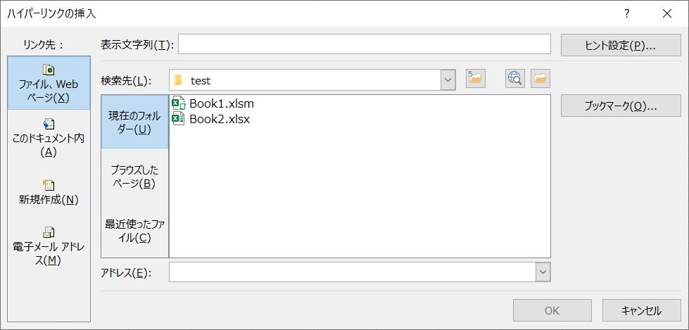

第95回.ハイパーリンク（Hyperlink）

VBAでハイパーリンク（Hyperlink）を追加したり削除したりする場合を解説します。
ハイパーリンクは、Hyperlinkオブジェクトです、
そして、Hyperlinkオブジェクトの集まりであるコレクションが、Hyperlinksコレクションになります。
コレクションとオブジェクトが分かりずらいかもしれません。
Hyperlinksは、Hyperlinkのコレクションです。
Hyperlinks(1)は、Hyperlinkオブジェクトです。
簡単に言えば、シートには複数のハイパーリンクが存在します、これがHyperlinksコレクション
1つのハイパーリンクを特定した時、それがHyperlinkオブジェクトになります。
Hyperlinksコレクション
| メソッド | Add | 指定された範囲または図形にハイパーリンクを追加します。 |
| Delete | オブジェクトを削除します。 | |
| プロパティ | Application | 対象となるオブジェクトが指定されない場合は、Excel アプリケーション (Application オブジェクト) を返します。 対象となるオブジェクトが指定された場合は、指定されたオブジェクトを作成した Application オブジェクトを返します。 OLE オートメーションを使っていて、オブジェクトのアプリケーションにアクセスするときなどに、このプロパティを使います。 値の取得のみ可能です。 |
| Count | コレクションに含まれるオブジェクトの数を表す長整数型 (Long) の値を返します。 | |
| Creator | 現在のオブジェクトが作成されたアプリケーションを示す 32 ビットの整数を取得します。 値の取得のみ可能です。長整数型 (Long) の値を使用します。 |
|
| Item | コレクションから単一のオブジェクトを返します。 | |
| Parent | 指定されたオブジェクトの親オブジェクトを取得します。値の取得のみ可能です。 |
セルにハイパーリンクを追加する場合は、Addメソッドを使います。
Addメソッド
| Anchor | ハイパーリンクのアンカーを指定します。 Range オブジェクトまたは Shape オブジェクトを指定します。 |
| Address | ハイパーリンクのアドレスを指定します。 |
| SubAddress | ハイパーリンクのサブアドレスを指定します。 |
| ScreenTip | ハイパーリンク上をマウス ポインターで指した場合に表示されるヒントを指定します。 |
| TextToDisplay | ハイパーリンクで表示されるテキストを指定します。 |
Hyperlinkオブジェクト
| メソッド | AddToFavorites | ブックまたはハイパーリンクへのショートカットを "お気に入り" フォルダーに追加します。 |
| CreateNewDocument | 指定したハイパーリンクにリンクされた新しい文書を作成します。 | |
| Delete | オブジェクトを削除します。 | |
| Follow | 既にダウンロードしてある場合、キャッシュに格納されたファイルを表示します。 ダウンロードしていない場合、ハイパーリンク先にある目的のファイルをダウンロードし、適切なアプリケーションで表示します。 |
|
| プロパティ | Address | 対象ドキュメントのアドレスを示す文字列型 (String) の値を取得、または設定します。 |
| Application | 対象となるオブジェクトが指定されない場合は、Excel アプリケーション (Application オブジェクト) を返します。 対象となるオブジェクトが指定された場合は、指定されたオブジェクトを作成した Application オブジェクトを返します。 OLE オートメーションを使っていて、オブジェクトのアプリケーションにアクセスするときなどに、このプロパティを使います。 値の取得のみ可能です。 |
|
| Creator | 現在のオブジェクトが作成されたアプリケーションを示す 32 ビットの整数を取得します。 値の取得のみ可能です。長整数型 (Long) の値を使用します。 |
|
| EmailSubject | 指定されたハイパーリンクのリンク先が電子メールの場合、メールの件名を表す文字列を設定します。 件名はハイパーリンクのアドレスに追加されます。 値の取得および設定が可能です。文字列型 (String) の値を使用します。 |
|
| Name | オブジェクトの名前を表す文字列型 (String) の値を返します。 | |
| Parent | 指定されたオブジェクトの親オブジェクトを取得します。値の取得のみ可能です。 | |
| Range | 指定されたハイパーリンクが割り当てられている範囲を表す Range オブジェクトを取得します。 | |
| ScreenTip | 指定されたハイパーリンクにヒントを設定します。値の取得および設定が可能です。 文字列型 (String) の値を使用します。 |
|
| Shape | 指定されたハイパーリンクに結合されている図形を表す Shape オブジェクトを取得します。 | |
| SubAddress | 指定したハイパーリンク先のドキュメント内の特定の位置を取得または設定します。 値の取得および設定が可能です。文字列型 (String) の値を使用します。 |
|
| TextToDisplay | 指定されたハイパーリンクに表示テキストを設定します。 既定値はハイパーリンクのアドレスです。値の取得および設定が可能です。文字列型 (String) の値を使用します。 |
|
| Type | HTML フレームの場所を表す長整数型 (Long) の値を返します。 MsoHyperlinkType クラスの定数を使用します。 |
ハイパーリンクの追加
ActiveSheet.Hyperlinks.Add Anchor:=セル, _
Address:="URL等/ファイルのフルパス", _
TextToDisplay:="表示名"
ActiveSheet.Hyperlinks.Add Anchor:=セル, _
Address:="", _
SubAddress:="'シート名'!A1", _
TextToDisplay:="表示名"
※シート名にシングルクォート(')を含む場合は、連続シングルクォート('')に置換する必要があります。
ActiveSheet.Hyperlinks.Add Anchor:=セル, _
Address:="ブックのフルパス", _
SubAddress:="'シート名'!A1", _
TextToDisplay:="表示名"
これが無いと、シート名に空白や記号があると正しくハイパーリンクが設定されません。
「セル」には、Rangeオブジェクトで、Range("A1")、Cells(1, 1)等を指定してください。
ハイパーリンクの削除
セル.Hyperlinks.Delete
セルはRangeオブジェクトを指定
複数セルの範囲を指定できます。
シート.Hyperlinks.Delete
シートはWorkSheetオブジェクトを指定します。
追加されているハイパーリンクの扱い方
With Cells(1, 1)
.Offset(0, 1) = .Hyperlinks(1).Address
End
With
Hyperlinks(1)
これが解りづらいのですが、
Rangeオブジェクトはコレクションでもあります。
Hyperlinksコレクションの指定になっているので、要素の特定が必要になっています。
が、しかし、
当然先頭要素しかありえないので、ここでは常に(1)になります。
With ActiveSheet.Shapes("四角形 1")
.TopLeftCell.Offset(0, 1) =
.Hyperlink.Address
End With
こちらは、Shapeオブジェクト内のHyperlinkオブジェクトです。
以下も参考にして下さい。
ユーザー定義関数でハイパーリンクのURLを取得
練習問題26（全シート処理とハイパーリンク）
同じテーマ「マクロVBA入門」の記事
第92回.名前定義（Names）
第93回.ピボットテーブル（PivotTable）
第94回.コメント（Comment）
第95回.ハイパーリンク（Hyperlink）
第96回.グラフ（Chart）
第97回.図形オートシェイプ（Shape）
第136回.フォームコントロール
第137回.ActiveXコントロール
第98回.Findメソッド（Find,FindNext,FindPrevious）
第99回.Replaceメソッド（置換）
第132回.その他のExcel機能（グループ化、重複の削除、オートフィル等）
新着記事NEW ・・・新着記事一覧を見る
VBA100本ノック 100本目：WEBから100本ノックのリストを取得｜VBA練習問題（3月3日）
VBA100本ノック 99本目：自動席替え（行列と前後左右が全て違うように）｜VBA練習問題（3月2日）
VBA100本ノック 98本目：席替えルールが守られているか確認｜VBA練習問題（3月1日）
VBA100本ノック 97本目：Accessデータを取得（グループ集計）｜VBA練習問題（2月27日）
VBA100本ノック 96本目：Accessデータを取得（マスタ結合&抽出）｜VBA練習問題（2月26日）
VBA100本ノック 95本目：図形のテキストを検索するフォーム作成｜VBA練習問題（2月24日）
VBA100本ノック 94本目：表範囲からHTMLのtableタグを作成｜VBA練習問題（2月23日）
VBA100本ノック 93本目：複数ブックを連結して再分割｜VBA練習問題（2月22日）
VBA100本ノック 92本目：セルの色を16進で返す関数｜VBA練習問題（2月20日）
VBA100本ノック 91本目：時間計算（残業時間の月間合計）｜VBA練習問題（2月19日）
アクセスランキング ・・・ ランキング一覧を見る
1.最終行の取得（End,Rows.Count）｜VBA入門
2.RangeとCellsの使い方｜VBA入門
3.変数宣言のDimとデータ型｜VBA入門
4.マクロって何？VBAって何？｜VBA入門
5.Range以外の指定方法（Cells,Rows,Columns）｜VBA入門
6.セルのコピー&値の貼り付け（PasteSpecial）｜VBA入門
7.繰り返し処理（For Next)｜VBA入門
8.セルに文字を入れるとは（Range,Value）｜VBA入門
9.マクロはどこに書くの（VBEの起動）｜VBA入門
10.とにかく書いてみよう（Sub,End Sub）｜VBA入門
このサイトがお役に立ちましたら「シェア」「Bookmark」をお願いいたします。
記述には細心の注意をしたつもりですが、
間違いやご指摘がありましたら、「お問い合わせ」からお知らせいただけると幸いです。
掲載のVBAコードは動作を保証するものではなく、あくまでVBA学習のサンプルとして掲載しています。
掲載のVBAコードは自己責任でご使用ください。万一データ破損等の損害が発生しても責任は負いません。